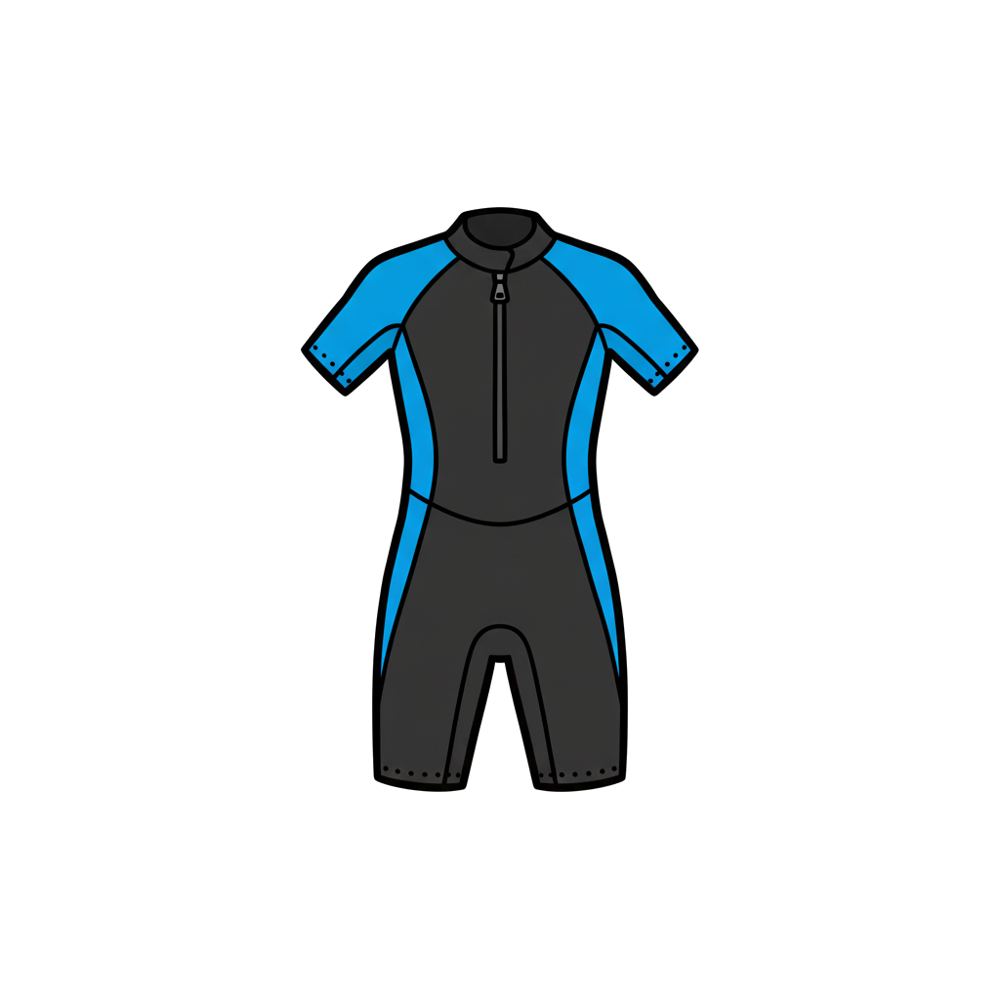
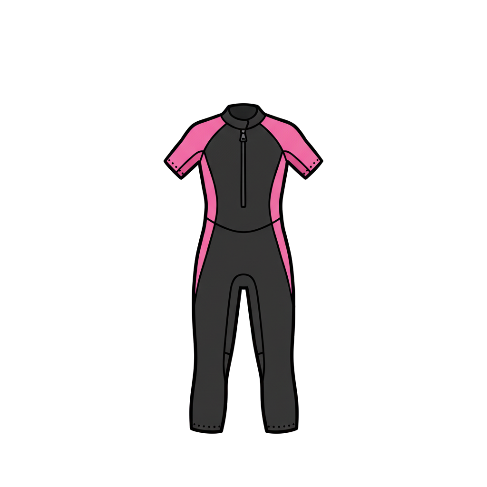
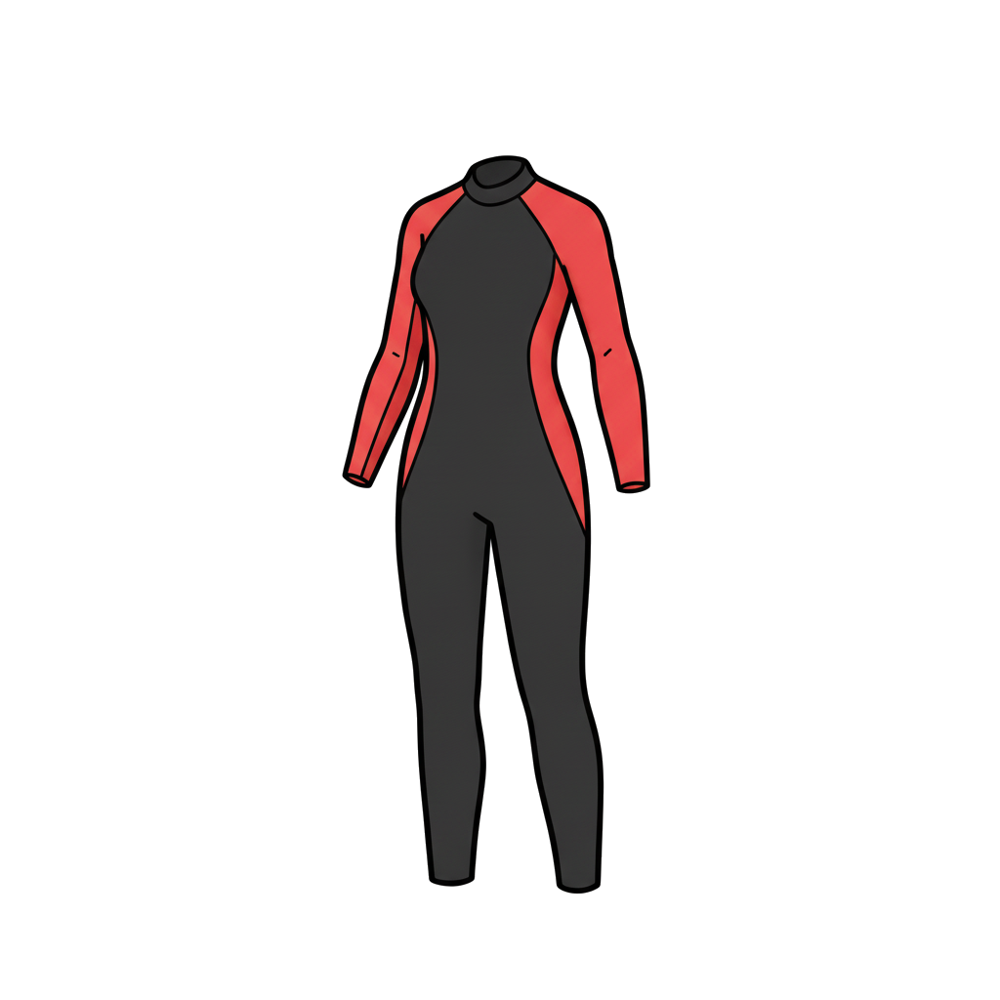

sns で以下のスノーケラー観光客による死亡事故に関するポストがあり、気になって調べたところ、亡くなった方の死因と備瀬崎の地形について疑問を感じてしまい、さらに調べてみたところ、2 つの仮説を想定するようになりました。以下はその仮説に対する 1 ダイバーによる報道からの推測を前提とする論考となります。専門家による論考ではないため鵜呑みには決してしないようにお願いします。
ぼくが気になったのは、以下の 2 点。気になると同時にこの 2 点が本稿であつかう仮説となります。
以下、上記 2 点について推論を進めていきます。
浸水性肺水腫はここ 20 年ほどと、比較的最近になって知られるようになった水面、水中でおきる急性疾患です。ダイビング、オープンウォータースイム、そして最近、スイミングプールでも発生することが報告されました。
発症年齢は中高年が多いものの、上記アクティビティの実施者自体が中高年を主体としており、年齢との関係のエビデンスはまだ不十分なようです。水中で行うアクティビティをおこなう人であれば、年齢に関係なく無縁ではない、と考えておくのが、現時点ではよさそうです。
体の中で何が起きる病気なのかを説明する前に、人の呼吸の仕組みを説明しておきます。
人の肺には酸素を体内に取り込むのにとても大切な、肺胞という組織があります。この肺胞をとりまく毛細血管とのあいだでガス交換がおこなわれて、血液中に酸素を取り込むことで、人は生命を維持しています。もちろん体内の二酸化炭素の排出や、ダイバーに関係の深い過剰な窒素の排出もこの肺胞を通して行われます。
浸水性肺水腫はこの肺胞内に毛細血管から血漿 (血液中の水分成分) が肺胞内に染み出し、酸素交換を妨げることで低酸素脳症を招き、最悪の場合死亡します。
なぜこのようなことが起きるのか、ある程度はわかっています。
空気中より低い水温と水圧によって手足脚部の末梢の血管が縮小し、血液を肺に押し戻します。すると肺胞をとりまく毛細血管内の内圧が上昇し、肺胞側が負圧となることから血液中の血漿が肺胞内に染み出していくという現象が起きます。
そのまま放置するといずれは肺胞が血漿で満されてしまい、溺水した肺胞のように内部が液体で満されてしまって、ガス交換ができなくなってしまい、 最終的には低酸素脳症に至るというのが浸水性肺水腫の病態です。
浸水性肺水腫と通常の溺水の場合の症状の発現の仕方には違いがあります。
通常の溺水であれば、わずかな時間で肺胞は海水または水で満たされるために、短時間で低酸素脳症になり、短時間で意識喪失、心肺停止状態に移行しやすいという特徴があります。
それに対して浸水性肺水腫の場合は、血漿が肺胞内に染み出すというメカニズムから、低酸素脳症、意識喪失、心肺停止状態に移行するのに、若干のタイムラグが発生します。
もう少しわかり易すく表現するなら、通常の溺水は見つけたときにはすでに心肺停止状態になっていることが多く、浸水性肺水腫の場合は助けあげて陸に上げてから呼吸不全を伴う意識喪失と心肺停止に至ることが多いという特徴があります。
スクーバダイビングで発生する死亡例では、普通に浮上して浮力の確保をし、呼吸をしていたものの、そのまま水面に浮かんだ状態で意識を喪失して、そのまま心肺停止に至るというケースが多いようです。
心肺停止という怖い言葉を出しましたので念の為に書いておきます。浸水性肺水腫は誰でもなるわけではありません。ですがリスク要因は最近知られてきています。次の項では浸水性肺水腫のリスク要因について整理していきます。
浸水性肺水腫は誰もがなるわけではありませんし、頻繁に発症が観察されるわけでもありません。
ですが、現時点でのダイビングの死亡事故のうち病死が無視できない数であり、そのなかの少くない数が浸水性肺水腫という報告も見られます。ですので浸水性肺水腫のリスク要因を知っておくことはとてもたいせつです。
現在浸水性肺水腫のリスク要因はある程度知られています。
本稿は備瀬崎のスノーケリング事故に関する論考ですので、スノーケリングに限定して浸水性肺水腫のリスク要因について述べていきます。他のスクーバダイビングなどの他のウォータースポーツアクティビティについては後日稿を改めようと思います。
身体が水に漬かっていることと、泳ぐという行為が基礎要因となります。水温が低くなったり、水泳強度が強くなると、浸水性肺水腫に罹患しやすくなります。
スノーケルで呼吸すればわかりますし、ダイバーなら誰でも知っていますが、スノーケルには呼吸抵抗があります (気が付きにくいですがレギュレーターにだってあります)。なにも装着していない普段の状態と比較するとガス交換の効率が低くなりますので、ダイバーは入門講座のオープンウォーターで深く大きな呼吸をするように必ず教わります。
このスノーケルの呼吸抵抗ですが、浸水性肺水腫のリスク要因かもしれないという説があり、説得力を持って支持されています。呼気のときではなく吸気のときが問題になると言われています。
どういうことかと言うと、人の呼吸の吸気のときは筋肉の力で肺を物理的に膨らませます。すると肺内が陰圧になって気道を通過した空気が肺胞に流れ込みます。
スノーケルの吸気抵抗が、この陰圧の大きさと陰圧の時間を長くしてしまい、血漿を肺胞内に染み出しやすくさせることで浸水性肺水腫をより悪化させるのではないか、と危惧する研究者がいます。
さすがにそこまでスノーケルの吸気抵抗が大きく病像の悪化に寄与することはないのではないか？と言う研究者もいて、エビデンスとして確立されているという状態ではないようです。
ですが理論上はたしかにリスク要因として有り得ると考えられることもあり、これからエビデンスがどのように推移していくのかは要注目だと言えます。
自分の泳力以上に頑張って泳ぎ回ったり、流れに逆らったりすると、心拍が増加して肺胞を取り囲む毛細血管の内圧が増大することで、浸水性肺水腫のリスクが高まることが知られています。低温と強い運動負荷が浸水性肺水腫の基礎要因だということを思い出してください。
高血圧や心臓に持病がある方は、水面に浮いているだけでも体に相当な負担がかかるため、軽度の運動でも発症のリスクが上がることが知られています。また高血圧、心臓疾患だけでなく、血圧降圧剤、寒冷刺激、脱水、ストレスなども発症リスクを高めるという研究もあります。同様の理由で、高脂血症、糖尿病も発症リスクではないかと素人としては思うのですが、今のところエビデンスは定かではありません。
今回の備瀬崎で亡くなったご主人の事故の経過を辿ってみると、どう見ても通常の溺水より浸水性肺水腫 (ipe) を疑わざるを得ません。
亡くなったご主人は基礎疾患こそ不明であるものの、他の浸水性肺水腫のリスク要因の全てに該当します。年齢、海という陸上とは異る低温環境、奥様の救助というダイビングインストラクターでさえとてつもなく厳しい強負荷運動、スノーケルの呼気負荷による肺胞の負圧促進など、どうみても浸水性肺水腫にならないのがおかしい悪条件が揃っています
報道によると、亡くなった方の事故の経過は次のようなものでした。
死亡者はまずは備瀬崎の島と備瀬崎海岸のあいだの水路を泳ぎきって備瀬崎にたどりつきます。たどりついてから奥さんが流されていることに気づき、救助に向います。
そしてリーフに登ったのち意識不明になったということが報道にあることから、お二人はアウトリーフ付近、またはアウトリーフの外にまで流されたと推察できます。浮力を得るためのものがほぼない状態でです。
この記述だけてダイバーでもあるぼくは怖くて震えあがってしまうのですが、亡くなったご主人が頑張ってお二人がリーフ内にまでは生還できたことが報道からわかります。
ただ報道にはリーフに上ったとしか書かれておらず、アウトリーフ内のどこかの水面上に剥き出しになったリーフに上ったのか、備瀬崎に上陸したのか、それとも備瀬崎海岸に上陸できたのかは報道からはわかりません。
第一報は第三者により行われたようなので、おそらくは備瀬崎海岸に上がったと推測しています。
ともあれご主人は、再上陸して生還を果たしてから、休憩したところ意識を喪失し、そのまま心肺停止に至っています。通常の溺水であれば、これはあまりないことです。
通常の溺水であれば、恐らくご主人は溺水から 2 分以内に心肺停止状態になり、水中で遺体が発見されるという経過をたどるはずです。ですがご主人は上陸後に心肺停止に至っています。これは通常の溺水ではあまり見られず、浸水性肺水腫 (ipe) を疑う根拠となります。
ただ報道によるとマスク内に水が溜まっていたということも報告されています。この水がただの海水なのか、あるいは血漿成分が混じっているのかを特定することは、ご主人の死因を特定するのにとても重要だと考えます。
ですが心肺停止状態になったご主人に対して当然バイスタンダーによる cpr は実施されたでしょうし、実施されたならマスクは顔から外されます。マスク内の水は流れてしまいますから、その成分を調べる方法はありません。
ですからご主人の本当の死因を特定するには、肺を満たしているはずの液体の分析、つまり検死所見が明らかにならないとずっとわからないということになります。
通常事故者の検死所見はプライバシーを守るために公開されないことが一般的です。ですから我々がいくら合理的に事故像を捉えようとしても、推測の域を越えることはできません。
ぼくのこの長い記事だってそうです。どのように合理的な考察を加えようとがんばっても、推測の域を越えることはできないのです。
もし亡くなったご主人が浸水性肺水腫であるなら、これはわたしたちの多くが無関係ではすみません。誰もが年をとりますし、体力も落ちていきます。でも海で泳ぐという行為は普通に続けるでしょう。
海に入ること自体が間違っているというネットでよく見かける極論に与する必要はありません。わたしたち人間は布団から出て、部屋から出て、家の外で活動する、そんな生態を持つ生物です。部屋に引きこもれという言説は、そういった性質を持つ人間という種を全否定しています。
そんな人として不自然で非現実的な論に耳を貸す必要はありません。わたしたちは人間です。それよりも大切なのは、人として、知恵あるホモサピエンスとして、如何にしてアウトドアでの事故リスクを減らすかという現実的な視点です。
ですのでここでは浸水性肺水腫のリスクを如何に下げていくのかということを、現時点で得られる知識をもとにまとめます。
浸水性肺水腫という病態が知られるようになって、まだたった 20 年しか経っていません。エビデンスも十分だと言えないのかもしれず、確かなエビデンスが確立されていくのはまだこれからだと思われます。
これは浸水性肺水腫に関する情報を追跡し続ける必要があることを意味します。
どうかこの稿を読んだあなた自身で追跡し続けてください。ぼくはもう還暦を過ぎています。新しい知見が得られたときには、ぼくはすでにもうこの世にいないかもしれません。
ですからあなた自身が情報を追跡して最新の知見にあなたが持つ情報を刷新してください。ぼくも生きている間はつづけます。
低水温を避ける方法は 2 つあります。
1 つ目は低水温をそのもの避ける。これは浸水性肺水腫を防ぐ決定打とも言えますが、これの意味するところは最悪水に入るな、となってしまい、非現実的です。
ですが夏の南紀串本の水深があまりないビーチなどでは、水面温が 30℃に達する場合もあります。そのような水温が充分すぎるほどある場合には、水着やラッシュガードでも大丈夫かもしれません (もちろんライフジャケットなどの着用は大前提となります。もしあなたがダイバーならどのような装備でエントリーすべきか判っているはずです。ダイバーとしての常識に従って着用するスーツを選んでください)。ですがそれもその時の気象条件や海況に依存します。
低水温を緩和する方法のもう一つには、体に合ったウェットスーツなどの保温スーツを身につけるという方法があり、ぼくはこれをお勧めします。
ウェットスーツなどの保護スーツは浮力の確保、怪我の防止、そして今回問題にしている体温の保温に絶大なる効果を発揮します。
スノーケラーにはウェットスーツの着用とライフジャケットの組み合わせを強くお勧めします。

もし高い水温が想定されるなら、ウェットスーツはワンピースやツーピースのフルスーツではなく、スプリングと呼ばれる半袖半ズボンがドッキングしたようなタイプのものでいいかもしれません。

岩場などで膝をつくことがありそうならシーガルと呼ばれる半袖で足首丈まであるタイプのウェットスーツを選ぶのも良い選択です。

怪我の予防を考えると、手首丈足首丈まであるワンピースタイプをお勧めしたいところです。ですが真夏の強い日差しの高水温の水面だと暑く、熱中症を逆に心配する必要もあります。
スーツを作ったり購入するときは、想定する水温をしっかりと把握してそれに適したチョイスをする必要があります。
またどんなタイプのスーツを選ぶにせよ、体に合ってるということがとてもたいせつです。
スーツが大きすぎるとスーツ内の水の出入りが多くなり、体温を維持することが難しくなります。浸水性肺水腫を予防するという観点から好ましくないのは明らかです。
逆にスーツに締め付けられて苦しいところがある場合も浸水性肺水腫の予防という観点からは望ましくありません。これは身体が過剰に圧迫されることで、肺胞を取り巻く毛細血管の血圧が上昇してしまい、血漿の肺胞への浸潤が促進される可能性がエビデンスの一つとして提起されています。
ですから体にあったスーツを着用するということが浸水性肺水腫を予防するうえでとてもたいせつです。なので高リスク世代の中高年の方には店舗で身体をきちんと採寸してもらって、スーツをオーダーメイドすることをお勧めします。
それが無理なら、実店舗でスーツを実際に試着して、大きすぎず、小さすぎないサイズのウェットスーツを根気よく探してください。
ネットショップで適当に l だとか xl だとかを選ぶことが浸水性肺水腫を防ぐために本当に有効なのか、本当にそれで大丈夫なのか、きちんと 1 度、考えてみてください。
まさか自分は大丈夫だろう、これくらい大丈夫だろう、そう思われる方が大半であることは知っています。スクーバダイビングのベテランインストラクターでさえ、そうおっしゃる人はいます。
ですがこれくらい大丈夫だろうという考えが悲しい事故やとても危険なヒヤリハットに繋っているのをスクーバダイビングのアシスタント・インストラクター、ダイブマスター候補生時代に嫌というほど見てきました。
ですから、これくらい大丈夫だろう、と思ってしまう自分自身を 1 度は疑ってください。それくらい自分というものは脆弱です。スクーバダイビングのインストラクターでさえ、やはり人間なので脆弱なのです。
低温と過度の運動が浸水性肺水腫の主因であるということは、これまで何度も触れてきました。今回の備瀬崎の事故では奥様の救助というやむを得ない事情があったとはいえ、救助のトレーニングを一切受けてないと思われるご主人が最終的に遭難に至り、尊い命を失うという悲しい結末を迎えています。
結論を先に書いてしまいますが、中高年と呼ばれる年齢になったら、激しく泳ぐことは避けるべきです。そもそも何の準備もなく流れがあるような場所には入るべきではありません。ウェットスーツやライフジャケットなどの浮力がまったくなく、流れに対処するための知識も技術、判断力も一切ない状態で、そのような場所に入るのは自殺行為です。
水に入る前に地形をしっかりと観察し、地形からどこが流れてそうか、そしてどれくらい流れてそうか、潮汐の状況を把握しておき今の時間にどれくらいの流れが発生していそうか、それがどのように時間の経過とともに推移していきそうか理解し、場所がリーフの切れ目であればリーフに入り込んだ海水が目の前の水路状に集中していないか判断し、もし少しでも流れているのなら流されずに泳ぎ切る体力がそもそも自分たちにあるのか、自分たちの年齢で入ってだいじょうぶなのか、そういったことを冷静に観察して評価してください。
そうしなければ、あなたはそこで最悪死にます。外洋まで流されてそのまま潮流に捕まって遺体も出てこなくなるかもしれません。外洋まで流されなくても岸に戻れなくてパニックに陥りそのまま溺死する可能性もあります。フィンを履いた状態で立ち上がれずにそのまま溺水するケースもあります。そして流れに激しく逆らってなんとか岸にたどり着いたものの、浸水性肺水腫を発症して死亡するケースもあるでしょう。スノーケルクリアというダイバーならなんでもないスキルができずにそのまま溺死するケースなど、観光スノーケラーが死亡する事故例は枚挙にいとまがありません。
海で死なないための知識と技術、判断力を身に着けてください。そのための安価で手っ取り早い方法はスクールに参加することです。ツアーではありません。スクールです。ダイビングスクールも開催しているショップのスノーケリングスクールに参加してください。それが事故リスクをグっと下げます。
スノーケラーやスキンダイバーに必要なスキルの一覧を付録にまとめています。参照してください。
ダイバーならご存知の通りスノーケルには無視できない死腔の拡大を伴います。ですので、オープンウォーターコースから、スノーケルで呼吸するときは肺でのガス交換を強く意識した深く大きくゆっくりとした呼吸をしなさいと学びます。
死腔とは実際のガス交換に使われることがない空間のことを言います。体内でいえば口腔から肺胞手前までの気管や気管支などを差します。スノーケルを咥えるということは、この死腔がスノーケルの内容積分だけ増えることを意味します。
またスノーケルには呼吸抵抗というものがあります。空気は物理学的に流体ですので、どこかを流れるとき、特に狭い場所を流れるときに、抵抗が生まれます。この物理現象もガス交換を阻害しますから、これも同様にスノーケルで呼吸するときは深く大きな呼吸をゆっくりとしなさい、という指導に繋がっています。
前述のようにスノーケルを咥えた状態での吸気時は、肺胞内が陰圧に傾き、相対的に肺胞を取り巻く毛細血管内圧が低下することで、血漿 (血液中の水分成分) が染み出しやすくなることが知られていて、望ましくない方法でのスノーケルによる呼吸が浸水性肺水腫を増悪させている可能性を示唆する研究者もいます。
それからもわたしたちはスノーケルで呼吸するときは深く大きな呼吸をゆっくりとしなければなりません。
ですけれども激しく泳ぐなどにより、深く大きなゆっくりとした呼吸ができない場合は、肺胞の陰圧状態と相対的な肺胞周囲の毛細血管内圧の上昇が促進されてしまい、浸水性肺水腫に罹患しやすい状態になってしまいます。ですからリスク要因を抱える人ならなおのこと、激しく泳ぐ事態は避けなければなりません。
備瀬崎の事故ではまさか救助に向わないわけにはいきませんから、お二人はどうするべきだったのかというと、海況をきちんと判断して、自分たちに流れのなかを泳ぎきる能力がないときちんと判断して、流れのある場所には入らない、という判断をしなければなりませんでした。お二人はそのときにその海に入るべきではなかったのです。
備瀬崎海岸のように海水浴場でも遊泳場でもなんでもないオープンウォーター (自然のままの海) に、知識もない、スキルもない、ましてや心構え判断力も一切ない人が、無防備に突っ込んでいくことは、今回のように非常に危険です。
何度も繰り返しますが、それらのことを身につけるのに最適なダイビング・ショップは世の中にたくさんあります。そしてそれらのダイビング・ショップの多くはスノーケリングをより安全に楽しむための講座とトレーニングを提供しています。是非とも参加をご検討ください。海で死亡するリスクを減らすことが間違いなくできます。
高血圧、心臓疾患、肥満、血圧降圧剤の使用、寒冷刺激、脱水、ストレスなどが浸水性肺水腫の発症リスクだということは述べました。ごらんの通り、一部を除き全て生活習慣病です。ですから日頃からお酒を控え (生涯断酒が望ましい)、適度な運動をし、健康的な食生活をおこない、睡眠も充分とるなど、成人病と無縁の生活を心掛ける必要があります。
いまさら遅いよという声が聞こえてきそうです。そういう人は今からでも治療に取り組み、生活習慣の改善にまじめに取り組みましょう。海で遊びたいのなら取り組みましょう。
また過剰なストレスを避け、ストレスケアも普段から積極的に図りましょう。寒冷刺激については低水温の項を参照してください。
水分ですが、脱水は浸水性肺水腫のリスクとされていますが、実は過剰な水分摂取も浸水性肺水腫のリスクファクターだと言われています。これは過剰な水分摂取により血液中に水分が取り込まれ、肺胞をとりまく毛細血管内圧が上昇しやすくなり、浸水性肺水腫のリスクを押し上げると説明されています。
水分は取りすぎても取らなさすぎてもよくない、ということになります。スノーケリングはアクティビティの間ずっと口呼吸しますから喉が乾きます。そのために過剰に水分を取ってからスノーケリングを始めてしまい、浸水性肺水腫を発症するケースがあるそうです。水分摂取もほどほどにしましょう。けっきょく過剰はよくないということです。
ご存知だとは思いますが近年観光スノーケラーによる死亡事故が多発しており、ダイビングなど他のマリンアクティビティでの死亡事故と比較してもその数は群を抜いています。大半を占めているといっても過言ではありません。
その大きな背景として、観光スノーケラーの方は、海を学ぶこと、海にどう対処すべきなのか、どのようなスキルが必要で、どのような機材を身につけるべきなのかといったいことを一切学ばずに海に入られます。死亡事故が起きるのは当然とも言えます。
特に中高年の方の海での死亡事故の報道が近年は絶えません。最近では死因のなかに無視できない数の浸水性肺水腫の報告や疑いの報告が増えてきています。
この記事でとりあげた備瀬崎の不幸な事故に浸水性肺水腫なのではないか、との疑いを持ったこともあり、浸水性肺水腫の病態やその予防について、素人なりにまとめてみました。
もしこの記事が不幸な事故を減らすことに寄与できるのであれば幸いです。
最後に奥様を助けるために自身の能力を越えてまでがんばった (そのことは決して褒められませんが) 亡くなったご主人のご冥福を心からお祈り申し上げます。
事故は未然に防ぐことはできたという思いは消えませんが、でもあなたは奥様を助けるためにがんばった。そのことは決してぼくは忘れません。
ow コースには以下の達成しなければならないスキンダイビング関連項目があります。スノーケラーやスキンダイバーが海で遊ぼうとする際に役立ててください。